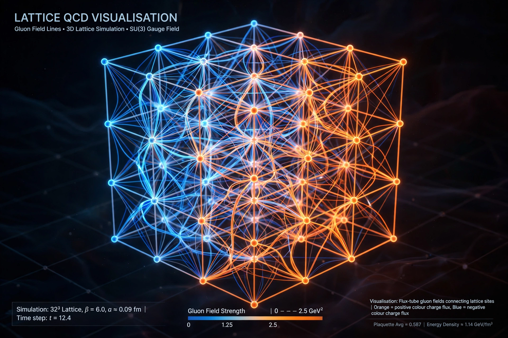

Yang–Mills existence and mass gap
| Yang–Mills existence and mass gap | |
|---|---|
 | |
| Field | Mathematical physics, quantum field theory |
| Theory from | Chen Ning Yang and Robert Mills (1954) |
| Status | Open |
| Prize | Millennium Prize Problem |
Yang–Mills existence and mass gap is one of the seven Millennium Prize Problems of the Clay Mathematics Institute. It asks mathematicians to put quantum Yang–Mills theory — the framework underlying the Standard Model of particle physics — on a rigorous footing, and to prove that the theory predicts a mass gap: its lightest particle excitations have positive mass, even though the classical theory involves only massless fields.
Background
In 1954 Chen Ning Yang and Robert Mills generalised Maxwell's electromagnetism to non-abelian gauge groups such as SU(2) and SU(3). Yang–Mills theory now underlies quantum chromodynamics (QCD), the theory of the strong nuclear force, whose force carriers are gluons. Computer simulations of lattice QCD overwhelmingly indicate that pure Yang–Mills theory confines quarks and that its spectrum starts above zero — the lightest glueball states have masses around 1.5 GeV — but no analytic proof exists.
The problem
The official statement, by Arthur Jaffe and Edward Witten, requires: (1) a rigorous construction of quantum Yang–Mills theory for any compact simple gauge group in four-dimensional spacetime, satisfying the axioms of quantum field theory (in the Wightman or Osterwalder–Schrader form); and (2) a proof that the Hamiltonian has a positive lower bound Δ > 0 above the vacuum energy — the mass gap. Success would also be a giant step toward a mathematical proof of quark confinement.
Status
Yang–Mills theory has been rigorously constructed in two and three spacetime dimensions, and Balaban and others made major progress in the ultraviolet regime in four dimensions via lattice methods, but a complete construction eludes proof. The problem is often considered among the hardest of the Millennium problems because it demands wholly new mathematical tools for interacting four-dimensional quantum field theory.